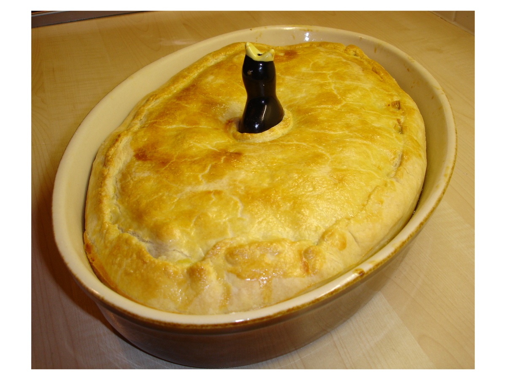
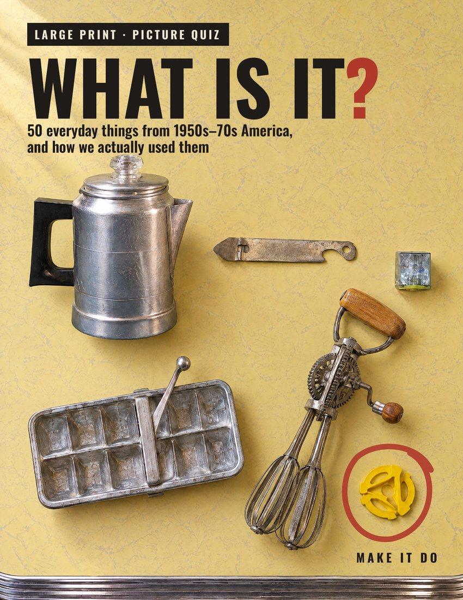

What is it?

It sat inside the pie, with only its head showing.
Choose an answer.
It's Pie Bird.
It was a hollow little ceramic figure, often a blackbird with an open beak. You stood it in the middle of the bottom crust, piled the fruit filling around it, and laid the top crust over it so the beak poked through a slit. While the pie baked, steam escaped out the beak instead of bursting the crust or boiling juice over into the oven.
That's one of fifty. The rest of the answer, and 49 more things like it, are in the book.
Fifty things only we know how to use
The church key. The sprinkle bottle. The curb feeler. The ditto machine. Each one gets a real photograph, one clue and four choices. Turn the page and there's the answer, and how we actually used it, step by step.


Two real pages from the book, shown smaller than they print. Tap to see them full size.
- 50 real photographs of real objects, from museums, archives and collectors. No drawings.
- Large print throughout: 19-point answers, 20-point choices, on big 8½ × 11 pages.
- Every answer teaches the how: how the wringer was fed, how the party line worked, how you dimmed the headlights with your foot.
- 5 large-print word searches, a score card for the whole family, and pages to write down the ones we forgot.
- Five chapters: the kitchen, wash day, telephone and TV, the car, and school, store and town.

What Is It?
50 everyday things from 1950s–70s America, and how we actually used them.
Paperback: 125 pages, 8½ × 11 inches, black and white. PDF: the same book in color, ready to print or read on a tablet. Print it as often as you like for your own family. The PDF is refundable within 30 days, no questions asked.
Three ways to play
- On your own. Look, guess, turn the page. Then tick whether your family had one.
- With the grandchildren. You hold the book and read them the clue. Let them guess, then tell them how it really worked, and how your family did it. That's the part they'll remember.
- With friends or a group. Show the photo and read the clue. First to name it wins the point. No phones.
Not sure yet? Print five free.
We'll email you a large-print sheet of five mystery objects from the book, with the answers on the back. Try it at the table this weekend. We'll also tell you the day the book opens, and when the next one comes out. Nothing else.
Questions people ask
Is it a real paper book?
Yes. The paperback is a real printed book, 8½ by 11 inches, 125 pages, shipped to your door by Amazon. If you'd rather print it yourself, there's also a PDF version you can have in your email in a minute.
How big is the print?
Big. The answers are set at 19 points, the quiz choices at 20 points, and the headings much larger, in a typeface made by the Braille Institute for people with low vision. You shouldn't need your reading glasses for most of it.
Are the pictures real?
Every object in the book is a real one, photographed by a museum, an archive or a collector, and credited at the back. No drawings and no computer-made pictures inside. (The cover is a painted-style illustration, and we say so.)
What years does it cover?
Roughly 1950 to 1975: the kitchen, wash day, the telephone and television, the car, and school, store and town. A few things, like the wringer washer, started earlier and hung on in plenty of houses.
Will my grandchildren enjoy it?
That's what it's built for. You hold the book and read the clue and the four answers out loud. They guess. Then you turn the page and tell them how it really worked, and how your family did it. Most children get very few right, and they love being wrong about a church key.
Is it good for someone with memory loss?
Many families use picture books like this for reminiscing, and the large print and real photographs help. It isn't a medical product, and there are no trick questions or time limits. If you're buying for a parent in care, the 'In our house' boxes on each answer page are a gentle way to get a story started.
Is it a good gift?
It's a good gift for anyone who grew up between about 1945 and 1975, and for their children and grandchildren. Use the 'Drop a hint' button on this page to send the link to your family.
How do I get the PDF, and can I print it?
After you pay, the PDF is emailed to you straight away. It's in color, and you may print it as many times as you like for your own family, on any home printer, on regular letter paper.
What if I don't like it?
The paperback follows Amazon's normal return policy. For the PDF, write to us within 30 days and we'll refund you, no questions asked.
Who made it?
Make It Do, a YouTube channel about how ordinary Americans actually did things, from the 1930s to the 1970s. The book was written to the same rule as the films: nothing invented, and if we weren't sure of a date or a price, we left it out.
Stump us
The next book is being built from readers' objects. Know a thing from your house, your car or your town that would stump everybody? Tell us about it here.